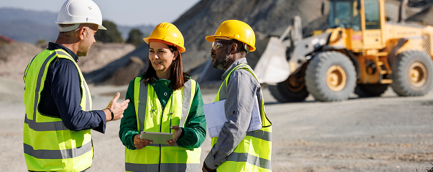

SERVIÇOS
Como podemos ajudar
Eliminamos barreiras linguísticas em projetos de mineração com tradução e interpretação técnicas especializadas. Atuamos em auditorias, due diligence, treinamentos e comunicação operacional, garantindo precisão técnica da mina ao porto.

Suporte linguístico em diversos cenários:
- Comunicação presencial e online entre equipes multiculturais
- Auditorias e due diligence
- Workshops
- Acompanhamento em feiras e conferências
- Treinamentos técnicos
Documentação técnica especializada:
- Relatórios técnicos e laudos geológicos
- Contratos e documentos jurídicos
- Manuais operacionais e de equipamentos
- Documentação de due diligence
- Relatórios de compliance e ESG